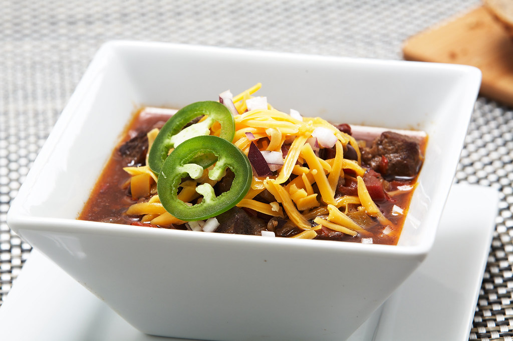

Best Slow Cooker Chili Recipe

Best bowl of chili you will ever have!
This slow cooker chili will knock your socks off! It is simply one of the best cozy meals that you can ever have , especially on those colder days.
Its simple to make, and it will last your family at least 2 days. This is usually made with ground beef, but you can substitute ground turkey to make it into a healthier meal.
Ingredients
Serving size = 8 Servings
- 1 tbsp extra virgin olive oil
- 2 lbs ground beef (usually 80/20) - Note: Feel free to substitute ground turkey
- 1 yellow onion - finely chopped
- 3-5 cloves of garlic
- 2 - 14.5 oz cans diced tomatoes with green chiles
- 3 - 8 oz. cans of tomato sauce
- 1/2 cut beef broth - or chicken broth if using ground turkey
- 2 tbsp chili powder
- 2 1/2 tsp ground cumin (optional)
- 2 tsp paprika
- 2 tsp unsweetened cocoa powder
- 1 tsp granulated sugar
- 1/2 tsp ground coriander
- 1 (15 oz) can - dark red kidney beans
- 1 (15 oz) can - light red kidney beans
- salt and pepper to taste
- shredded cheese, sour cream for serving
Instructions
- In a large skillet, heat the olive oil over medium heat
- Once the pan is hot, saute the onions and garlic until fragrant
- Once the vegetables are thoroughly sauteed, transfer them to the slow cooker.
- Return the skillet into a medium-high heat.
- Add the ground beef (or ground turkey) into the skillet. Cook until the meat has browned
- Drain the liquid from the skillet
- Add the browned ground beef into the slow cooker
- Mix the ground beef and the onions and garlic until they're all evenly mixed in together
- Add the driced tomatoes, tomato sauce, beef (or chicken) broth,chili powder, cumin, paprika, cocoa powder, sugar, coriander into the crockpot bowl. Season with salt and pepper to taste.
- Add the dark kidney beans and light kidney beans
- Stir to make sure all of the Ingredients have mixed in
- Cover with the cooking lid and set on low heat for 6-8 hours.
- After the slow cooker is done, stir the contents together to ensure all mixed well.
- Serve by itself or dress it up with other toppins such as shredded cheese, sour cream or green onions.
Go Back Home